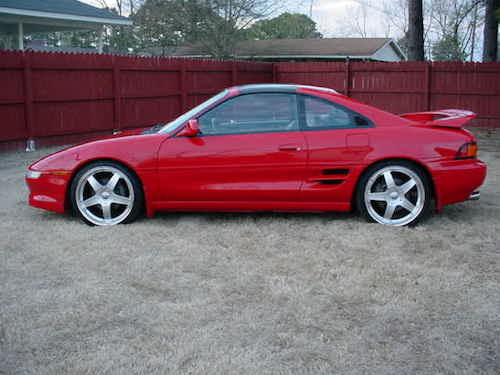

Below are some photos of a 1992 Toyota MR2 Turbo. My dad and I swapped a new Japanese-spec turbo engine into this car to get it running again. This is one of the most fun sports cars I've driven. It is still in the family.
|  |
Thanks to mr2kahn for the first picture. I can't find any good pictures of my car on my computer right now, so I had to resort to a Google Images search.